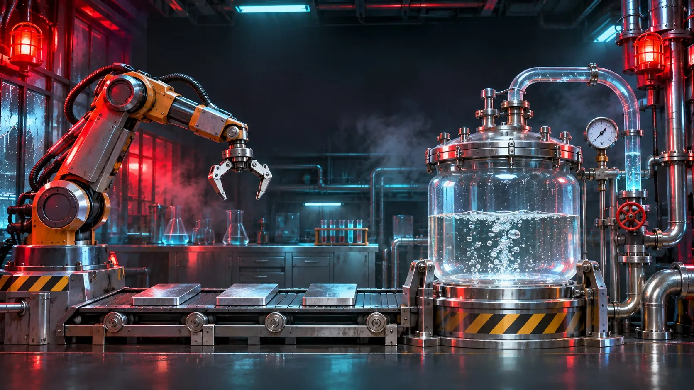

УРОВЕНЬ ОПАСНОСТИ52%
ОТСЕК № 6АВАРИЯ В МЕТАЛЛИЧЕСКОМ РЕАКТОРЕ
ВОССТАНОВЛЕНИЕ48%
ЗАДАНИЕ 1 ИЗ 5
РЕАКТОР · ДИАГНОСТИКА
Ошибка подачи металлов
Установка ожидает команду
⚠ ОТСЕК № 6 — МЕТАЛЛИЧЕСКИЙ РЕАКТОР
Робот перепутал металлические пластины. В реакторе с разбавленной соляной кислотой выделяется водород, а система дозирования работает неправильно.
Выбирай пластины на конвейере и варианты на приборе. В конце выбери все подходящие металлы и нажми «Проверить выбор». Здесь нет таймера.